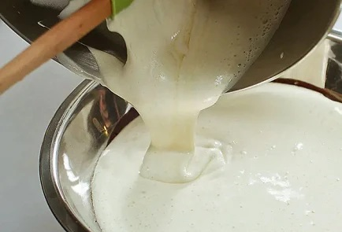

| Тёмный шоколад | 100 г | |
| Сливочное масло | 180 г | |
| Коричневый сахар | 200 г | |
| Куриное яйцо | 4 штуки | |
| Пшеничная мука | 100 г | |
| Грецкие орехи | 100 г |
ИНСТРУКЦИЯ ПРИГОТОВЛЕНИЯ
|
1 Шоколад разломать на кусочки и вмести со сливочным маслом растопить на водяной бане, не переставая всё время помешивать лопаткой или деревянной ложкой. Получившийся густой шоколадный соус снять с водяной бани и оставить остывать. |
|
|
2 Тем временем смешивать яйца соста граммами коричневого сахара: яйца разбить в отдельную миску и взбить, постепенно добавляя сахар. Взбивать можно при помощи миксера или вручную — как больше нравится, — но не меньше двух с половиной-трёх минут. |
|
|
3 Острым ножом на разделочной доске порубить грецкие орехи. Предварительно их можно поджарить на сухой сковороде до появления аромата, но это необязательная опция |
|
|
4 В остывший растопленный со сливочным маслом шоколад аккуратно добавить оставшийся сахар, затем муку и измельчённые орехи и всё хорошо перемешать венчиком. |
|
|  |
5 Затем влить сахарно-яичную смесь и тщательно смешать с шоколадной массой. Цвет у теста должен получиться равномерным, без разводов. |
|
6 Разогреть духовку до 200 градусов. Дно небольшой глубокой огнеупорной формы выстелить листом бумаги для выпечки или калькой. Перелить тесто в форму. Поставить в духовку и выпекать двадцать пять — тридцать минут до появления сахарной корочки. |
|
|
7 Готовый пирог вытащить из духовки, дать остыть и нарезать на квадратики острым ножом или ножом для пиццы — так кусочки получатся особенно ровными. |
|
|
8 Подавить брауни можно просто так, а можно посыпать сверху сахарной пудрой или разложить квадратики по тарелкам и украсить каждую порцию шариком ванильного мороженого. |